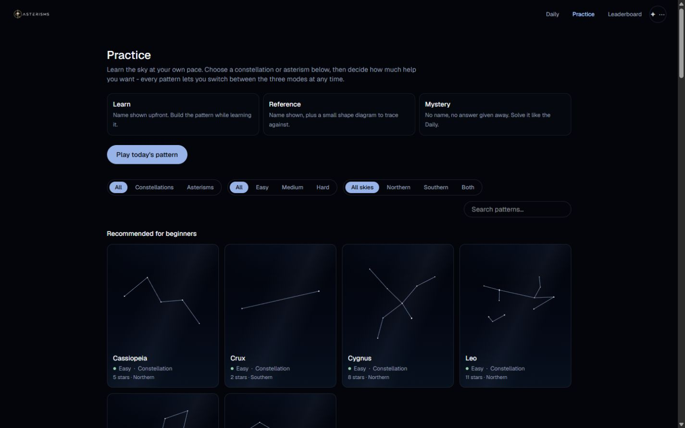
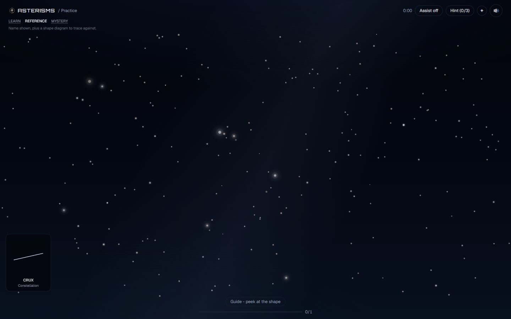
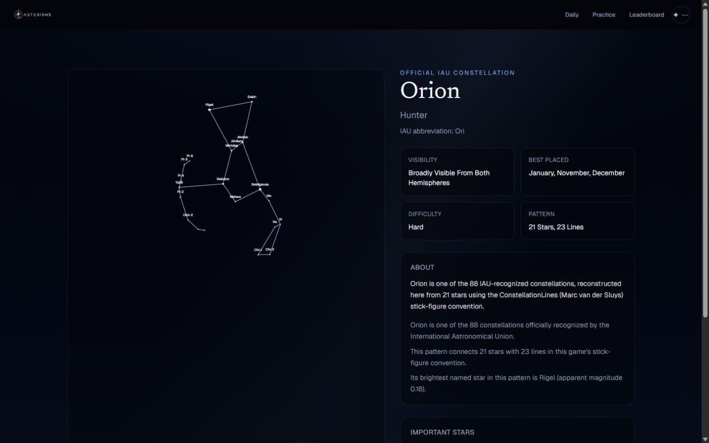
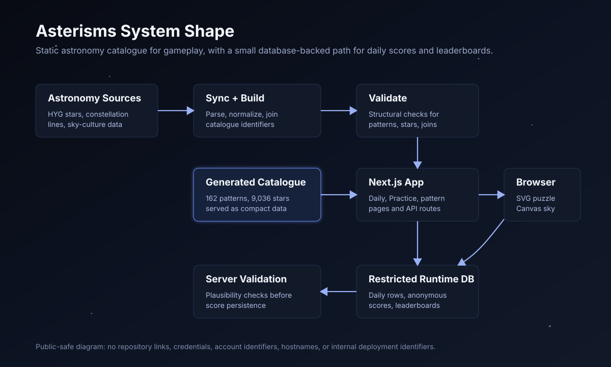
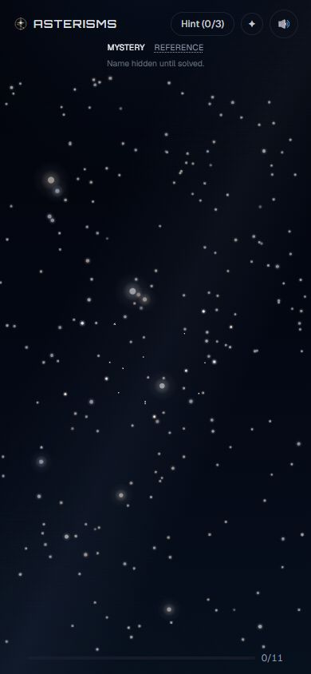

Recruiter-safe case study
Asterisms
A web game for learning to read the night sky by connecting real stars into constellations and asterisms.
The Product
Learn patterns by solving them.
A player sees a field of stars, infers the hidden pattern, connects the right stars, then gets a reveal with the name, score, notable stars, visibility, and related patterns. Daily mode gives everyone the same UTC-date challenge; Practice mode lets players choose any pattern and switch between Learn, Reference, and Mystery.



What Was Built
Product, data, rendering, API, and quality systems.
Gameplay
Daily and Practice modes share one puzzle engine with hints, scoring, reveal cards, sharing, and a Practice-only assist option.
Astronomy Data
A reproducible sync/build/validation pipeline turns licensed catalogue sources into compact generated JSON used by the app.
Backend
API routes handle daily payloads, reveal payloads, score submission, leaderboards, and health checks. Gameplay remains usable when database-backed features are unavailable.
Rendering
The puzzle uses SVG for accessible, interactive star hit targets; the atmospheric sky uses Canvas for dense decorative rendering.

System
Static catalogue for gameplay, small runtime database path for scores.
The catalogue is built ahead of time and shipped with the app, so the core learning experience does not depend on live database availability. Runtime persistence is limited to daily challenge rows, anonymous score submissions, and leaderboard reads.

Engineering Decisions
Interesting choices verified from the codebase.
Astronomy data
Join multiple catalogues instead of drawing shapes by hand.
Problem: constellations and asterisms need recognizable line conventions, but the app also needs real star coordinates and magnitudes. Decision: join line data and sky-culture metadata to HYG stars through catalogue identifiers. Trade-off: the pipeline is more complex, but the runtime catalogue is compact and reproducible.
Projection
Use real RA/Dec with gnomonic projection.
Problem: hand-positioned stars would make the game easier to fake but less meaningful. Decision: project real celestial coordinates onto a tangent plane, then rotate and scale without distorting the pattern. Trade-off: projection edge cases and hydration precision needed care.
Daily mode
Make the daily challenge deterministic from UTC date.
Problem: everyone should get the same daily puzzle even if the database is temporarily unreachable. Decision: derive the pattern and rotation from the UTC date, using the database only to record and rank scores. Trade-off: this is predictable by design, so spoiler protection remains reasonable-effort.
Learning UX
Separate visual star size from interaction hit targets.
Problem: real stars should render as tiny points, but tiny click targets are frustrating, especially on touch screens. Decision: use restrained magnitude and colour rendering while keeping accessible SVG targets large enough to interact with. Trade-off: visual and interaction geometry have to be managed separately.
Reliability
Treat optional services as optional.
Problem: analytics, donations, and leaderboard persistence should not break the core game. Decision: wrap analytics and database access behind no-op or graceful-degradation layers. Trade-off: some features report unavailable instead of failing loudly.
Data + Astronomy
Verified catalogue characteristics.
Sources and provenance
The current build uses ConstellationLines for official constellation stick-figure conventions, HYG v4.1 for star positions and stellar properties, Stellarium's Western sky culture for asterism conventions and names, a curated subset of compatible constellation artwork, and Astronomy Engine for live Solar System positions in the landing hero.
The app does not claim to be a professional astronomy simulator. It uses real data for a learning-focused game and documents known content gaps.
Reliability + Quality
Current validation status.
- Generated data validation passes with zero warnings and zero hard failures.
- Vitest passes: 14 test files, 79 tests.
- TypeScript check passes with no emitted errors.
- ESLint passes.
- Production build succeeds and generates 186 static pages plus dynamic app routes.
- CI runs data validation, tests, typecheck, lint, and build on pushes and pull requests.
- Security headers, route-level rate limiting, typed analytics wrappers, and database degradation paths are present.

Current Limitations
Honest scope boundaries.
- Not a professional astronomy simulator or observing planner.
- No accounts; scores are anonymous and device-local identity based.
- Daily score validation is a plausibility filter, not full anti-cheat.
- Mythology and broader sky-culture story text are intentionally absent until reliable sources are added.
- No real-time location-based "Tonight" mode yet.
- Some interaction polish still depends on browser and device capabilities.
- Personal role, timeline, and learning context are pending owner confirmation.
What this demonstrates
Asterisms shows the ability to translate an unfamiliar scientific domain into a usable product, work across data ingestion, rendering, frontend interaction, API routes, database persistence, deployment, and CI, and keep correctness claims tied to validation rather than marketing language.